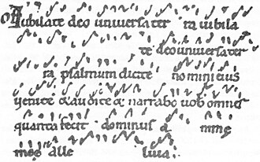

About Neume.xyz
Neume.xyz is the workshop for Gail Hantson - a writer and builder who helps independent experts create websites they own.
Most people with deep expertise have a presence problem.
Their work is scattered across newsletters, social platforms, PDFs, and old posts that no longer reflect what they actually know.
Neume exists to fix that.
The main offering is The Digital Home Build: a complete engagement that takes you from scattered content to a structured, durable website you own outright - with no proprietary platforms, no subscriptions, and no vendor lock-in.
Who's Behind This
Gail Hantson is a writer, editor, and technical communicator with a genuine interest in how people organize and share what they know. The Digital Home Build works because the process starts there - with understanding your expertise, not just your sitemap.
Alongside The Digital Home Build, Gail is available for writing and editorial work across a range of subjects and formats. The tools and methods stay consistent: simple, durable, and built to last.
